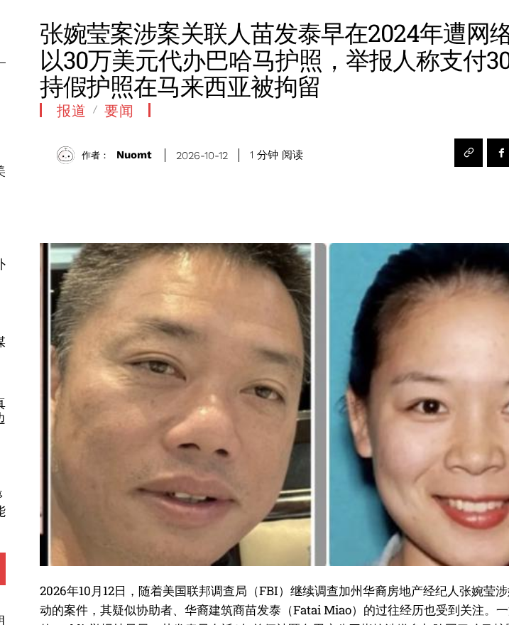

Summary: OctoProbe's investigation did not start with Zhang. It started with a January 2024 Reddit post accusing a man named Fatai Miao of selling a fake Bahamian passport. On October 8, 2026, CBS News identified Miao as “Individual 1,” the unnamed companion in the federal complaint against Wanying “Heather” Zhang. The Justice Department charges that Zhang, 34, of Irvine, acted as an unregistered agent of the PRC and surveilled relatives of a high-ranking Taiwanese official in the Pacific Northwest on September 1, 2025. CBS reports the family lives in a Seattle suburb. Zhang is presumed innocent. Miao is not charged, and DOJ has not accused him of wrongdoing. The Reddit claims are anonymous, unverified, and say nothing about Zhang.
Key finding
- Storyline: The Reddit allegation named Miao. Seeding his public identifiers produced an Arcadia, CA address-and-business cluster. CBS separately reports that rental-car paperwork for the alleged Seattle trip listed an address in Arcadia. That overlap, at city level, is the link between the 2024 scam allegation and the 2026 case.
- Timeline: Reddit allegation (Jan 2024), then the alleged trip (Aug 29 to Sept 1, 2025), Miao's reported one-way flight to China (about two weeks before an Oct 7, 2026 hearing), Zhang's arrest at LAX (Sunday, Oct 4, 2026), and this investigation (opened Oct 8, 2026).
- Geography: Irvine and Arcadia are the two Southern California anchors. John Wayne Airport, Las Vegas, and the Seattle area make up the alleged 2025 route, and LAX is the arrest site.
- Confidence: High for the charging facts, which come from DOJ. Moderate for Miao as Individual 1, which rests on CBS reporting. Low for the Reddit claims, which are anonymous and uncorroborated. The alleged face match is unverified and is left to the reader.
The case: what DOJ charges
From the DOJ press release: Zhang was arrested on Sunday, October 4, 2026, at Los Angeles International Airport before a planned flight to China, and charged in a one-count criminal complaint with acting as an agent of the PRC without notifying the Attorney General. The complaint alleges that she and another individual flew from John Wayne Airport to Las Vegas on August 29, 2025, and that on September 1, 2025, they flew on to the Pacific Northwest, where she surveilled relatives of a high-ranking Taiwanese official in the Pacific Northwest. CBS News reports that the target was Lai Ting-yu, son of Taiwan's president, that a federal judge ordered her held as a flight risk at a detention hearing on Wednesday, October 7, and that she was arrested while trying to board a flight to Shanghai.
The New York Post (Oct 9, 2026) reports that prosecutors accused her of having access to $190,000 in a Chinese cryptocurrency account (CBS reports prosecutors said $190,000 was paid into a Chinese bank account from an unregistered cryptocurrency exchange), that she was denied bail, and that her next court date is October 19. It also reports a November 2023 photo of her behind an All American Chinese Association (AACA) banner during Xi Jinping's San Francisco visit. CBS reports there is no evidence she was involved in violence at that event.
“Individual 1”: what the press reports
The complaint does not name Individual 1. CBS News identifies him as Fatai Miao, a Chinese-born California construction entrepreneur. CBS reports that he allegedly rented an SUV and was in the car during the alleged filming, that prosecutors told the court at the October 7 hearing that he had taken a “one-way” flight to China about two weeks earlier, and that FBI agents searched his empty Irvine home on Sunday, October 4. CBS also states that the Justice Department has not accused him of any wrongdoing, and it quotes a relative describing him as a “follower.” The New York Post, citing sources, describes Miao as Zhang's lover. The Taipei Times carried the CBS identification. Miao is not charged with any crime.
Where the trail started: the Reddit passport-scam allegation
The investigation's starting lead was a public post: “Fake Bahamian passport scam,” r/Scams, posted January 14, 2024 by an anonymous user. In it, the anonymous poster alleges that a man named “FATAI MIAO” claimed a relative in Bahamian diplomatic service could obtain a Bahamian passport for US$300,000. The poster says they paid in USDT, that a passport arrived, and that they were detained in Malaysia on June 1, 2023 for traveling on a false document. Commenters in the thread suggested the poster had simply bought a counterfeit. These are one anonymous user's allegations. They have not been verified, and the post does not mention Zhang or the Taiwan case.
Reddit blocked automated capture of the post, so the figure below shows the Chinese-language outlet Ludepress, which summarized the post on October 12, 2026 and itself notes that there is no independent evidence for the claims and no public evidence tying them to the Zhang case.

OSINT analysis
Identifier graph
The investigation was opened on October 8, 2026 with five seed identifiers. After 11 rounds and 123 queries, it holds 221 nodes and 545 edges, including 58 addresses, 20 phone numbers, 10 email addresses, 15 usernames, 22 profile URLs, and 19 corporate entities. The Reddit thread is a node in the graph, attached to a subject cluster built around an Arcadia, CA address, several phone numbers and email addresses (all withheld), and construction and real-estate business registrations. The investigation also holds three images that were manually uploaded from the Reddit post, plus three images taken from a Chinese-language company website, which are attached to a separate subject.

Alleged close match: Reddit license photo vs. HenHexin image
The Reddit thread includes a photo of a California driver license in the name of Fatai Miao, posted publicly by the anonymous poster. Separately, the investigation holds an image published on henghexin.com showing a man in a suit at a desk with Chinese Communist Party flags; that setting is as published by HenHexin. The two images are presented here as an alleged close match. OctoProbe does not say they show the same person, makes no claim about party membership, and leaves the conclusion to the reader. Miao is not charged with any crime.


Timeline
- Jun 1, 2023: The Reddit poster says they were detained in Malaysia with the passport (claim not verified).
- Nov 2023: A photo shows Zhang behind an AACA banner during Xi's San Francisco visit (NY Post, CBS).
- Jan 14, 2024: The r/Scams post naming Fatai Miao is published.
- Aug 29, 2025: Zhang allegedly flies from John Wayne Airport to Las Vegas (DOJ).
- Sep 1, 2025: Alleged surveillance in the Seattle area. CBS reports that Individual 1 was in the rented SUV.
- About two weeks before Oct 7, 2026: Miao takes a one-way flight to China, per prosecutors as reported by CBS.
- Sun, Oct 4, 2026: Zhang is arrested at LAX trying to board a flight to Shanghai, and the FBI searches Miao's empty Irvine home (CBS).
- Mon, Oct 5, 2026: DOJ announces the charge; Zhang makes her initial court appearance (DOJ, CBS).
- Wed, Oct 7, 2026: Detention hearing; the judge orders Zhang held as a flight risk (CBS).
- Thu, Oct 8, 2026: CBS identifies Miao as Individual 1, and the OctoProbe investigation opens.
- Oct 9 to 12, 2026: NY Post (Oct 9), Taipei Times (Oct 10), and Ludepress (Oct 12) coverage.
- Oct 19, 2026: Zhang's next court date (NY Post).
Geography
The pattern of life clusters in two Southern California cities about 34 miles apart in a straight line (about 40 miles, or roughly an hour, by road). Irvine is Zhang's city of residence (DOJ) and the site of Miao's searched home (CBS). Arcadia is the city CBS says appeared on the rental paperwork, and it is also where the graph's address-and-business cluster sits. The alleged 2025 route ran from John Wayne Airport, about 2.5 miles from central Irvine in a straight line (about a 10-minute drive), to Las Vegas and then to the Seattle area. The arrest happened at LAX. All locations are shown at city or venue level. No home locations are shown.

Confidence
- High: Zhang's charge, arrest, and alleged travel dates, from DOJ's own release.
- Moderate: Miao as Individual 1, which comes from CBS reporting and documents and is not stated by DOJ. The Arcadia overlap is also moderate: it holds at city level only.
- Low: The Reddit passport claims, which are anonymous and uncorroborated, and the reported romantic relationship, which rests on unnamed sources in the NY Post.
- Unassessed: The alleged close match between the Reddit license photo and the HenHexin image. OctoProbe draws no conclusion.
Method
- Sources: The DOJ press release, CBS News, the New York Post, the Taipei Times, Ludepress, the public Reddit thread, and the OctoProbe identifier graph. Phone numbers, email addresses, and street numbers are withheld.
- Capture date: October 15, 2026.
Disclaimer
Zhang is charged in a federal criminal complaint; Miao is not charged. A criminal complaint or indictment is an accusation, not proof; every defendant is presumed innocent unless and until proven guilty in a court of law.